1.1.1 Бутон Движение
Посредством бутон Движение има възможност за извършване на действия и преглед на справки за движения на делото.
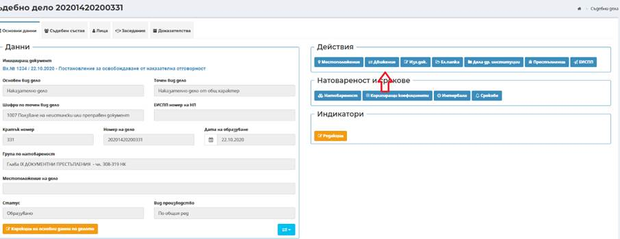
Функционалността за управление на движението на делото дава възможност за проследяване на делото при движение между различните съдилища и между съдебните инстанциите.
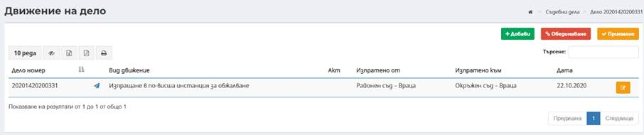
Управлението на връзките между делата при движението им между съдилищата или между инстанциите става чрез последователно свързване между изпращащия и приемащия съд /съдебна инстанция.
За движенията, които предизвикват образуване на дело в друг съд/инстанция, за свързване на дела при движение между съдилищата е необходимо при изпращане на делото от един съд на друг в изпращащия съд да се създаде изпращащо движение. При регистриране на входящия иницииращ документ в получаващия съд в секция Свързано дело се посочва делото на изпращащия съд. След образуване на дело в получаващия съд системата визуализира предупредително съобщение, че двете дела ще бъдат свързани.
Връзките между образуваните дела в ЕИСС става чрез последователно свързване и създаване на единични връзки между делата. Всяка следващо движение наследява свързаните дела, обвързани при предходно създаване на движение.
Пример: Първоинстанционно дело се посочва като свързано дело на въззивна инстанция при регистриране на иницииращ документ във въззивната инстанция, в секция Свързано дело. Само въззивното дело се посочва като свързано дело на касационната инстанция при регистриране на иницииращ документ във касационната инстанция, в секция Свързано дело, без да е необходимо на касационната инстанция да се посочва първоинстанционното дело. Връзката се наследява от предходното (въззивно) дело.
След връщане след инстанционна проверка, при регистриране на съпровождащия документ по съответното върнато дело, в секция Свързано дело се посочва делото на текущия съд.
Важно: Бутон Движение се използва и за изпращане на дела от ЕИСС към системата на административните съдилища – „Единна деловодна информационна система на административните съдилища“ -ЕДИС, както и за приемане на дело от ЕДИС към ЕИСС.
1.1.1.1.1 Изпращане на дело
За създаване на ново движение за изпращане на делото се избира бутон и се зарежда екран за въвеждане на данни, в зависимост от избрания вид движение:
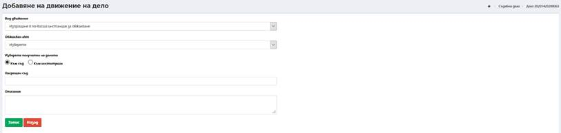
Вид движение – избира се от номенклатура вида на движението – Изпращане по подсъдност; Изпращане в по-висша инстанция за обжалване; Изпращане в по-висша инстанция за определяне на компетентен съд; Изпращане в по-висша инстанция при масов отвод; Изпращане в подчинен съд по компетентност; Връщане в подчинен съд с резултат от инстанционна проверка; Връщане в подчинен съд за администриране; Изпращане за послужване; Връщане след послужване и Връщане на делото за доразследване на прокуратурата;
Видовете движения, които могат да се използват при изпращане на дело към ЕДИС са следните:
- Движение за подсъдност
- Движение за обжалване
- Движение за определяне на компетентен съд
- Движение за масов отвод
- Движение за послужване
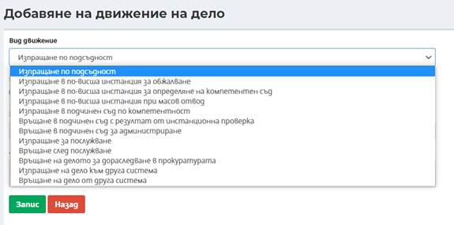
- Получател на делото – избира се посредством маркиране на радио бутон за насочване – към съд или към институция (в зависимост от конкретното движение):
Ø При маркиране на радио бутон Към съд, посредством въвеждане на част от наименование на съд в поле Насрещен съд се избира съд получател;
Ø При маркиране на радио бутон Към институция, в поле Насрещна институция посредством избор от падащ списък се избира типа на институцията, а посредством въвеждане на част от наименование на институция от избрания тип в поле Институция се избира институция получател.
Ø Обжалван акт (приложимо за движение Изпращане в по-висша инстанция за обжалване) – избира се от падащ списък с актове по делото, които са маркирани с атрибут „Подлежи на обжалване“.
- Описание – въвеждане на допълнителна информация. Поле с незадължителен характер.
- Забележка: При връщане на делото в подчинен съд с резултат от инстанционна проверка, делото може да се върне само ако има постановен финализиращ акт и въведен Резултат/Степен на уважаване на иска;
Забележка: Движение Връщане на делото за доразследване на прокуратурата има роля на изпращащо движение и се създава чрез попълване на приложимите по-горе полета.
След въвеждане на данните се избира бутон Запис , след което движението е успешно създадено.
Създаване на писмо
При избор на бутон Създаване на писмо се отваря екран за попълване на данни:
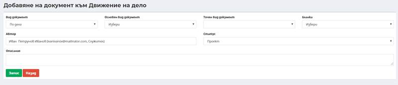
- Вид документ – избира се документа, който се изпраща – по дела;
- Основен вид документ - от падащото меню се избира основен вид документ, който се изпраща;
- Точен вид на документа – потребителят избира точен вид документ, който е в пряка зависимост от избран основен вид документ;
- Автор – автоматично е зададен потребителят изготвящ документа;
- Статус – при изготвяне на документа, той е в статус проект;
- Описание – при необходимост се вписва допълнителна информация.
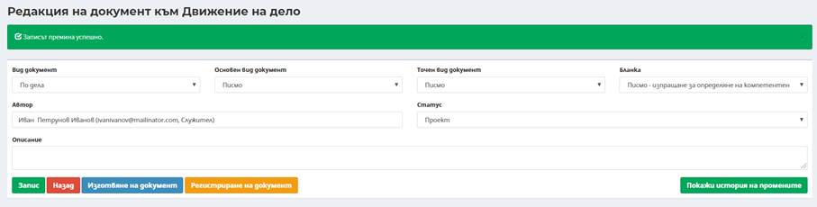
Изготвяне на документ
Системата дава възможност за изготвяне на писмо по предварително създадена в системата бланка или чрез текстов редактор чрез въвеждане на текст.
Изготвяне на писмо към движение по дело става посредством избор на бутон Изготвяне на документ. Отваря се текстов редактор за въвеждане на писмо в свободен формат.
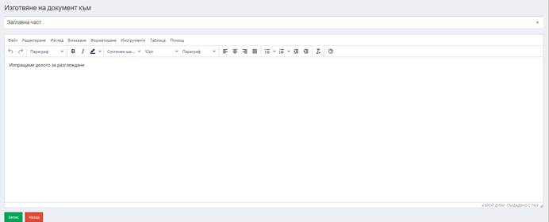
Регистриране на писмо (6.2 Регистриране на изходящ документ)
След избор на бланка за писмо или въвеждане на текст в текстовия редактор, се избира бутон Регистриране на документ, след което системата генерира писмото.
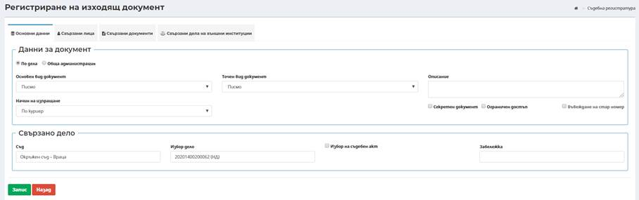
В екрана се въвеждат последователно необходимите данни (в случай, че не са автоматично попълнение при изготвяне на изходящото писмо): в таб Основни данни и свързани лица в таб Свързани лица чрез въвеждане на нови лица или избор на свързани лица и институции по делото, по което се генерира писмо, данни в таб Свързани документи и/или Свързани дела на външни институции.
След избор на бутон Запис се генерира
регистрационен номер и дата на писмото, и се генерира файл с писмо, който е
достъпен за последващ преглед.
се генерира
регистрационен номер и дата на писмото, и се генерира файл с писмо, който е
достъпен за последващ преглед.
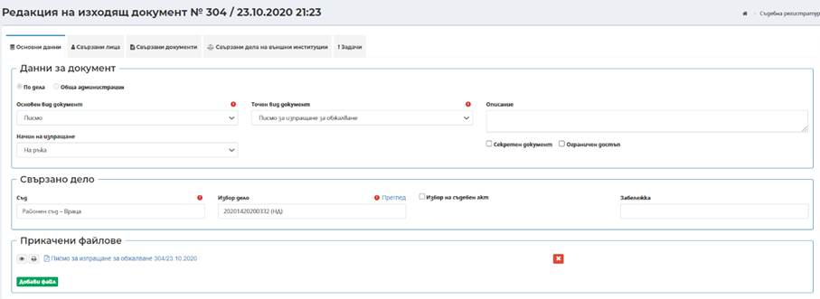
Преди да бъде подписано и разпечатено писмото, е създадена опция за преглед.
Бутон Движение се използва и в случаите, когато делото се изпраща и към друга система (пр. към Прокуратура)
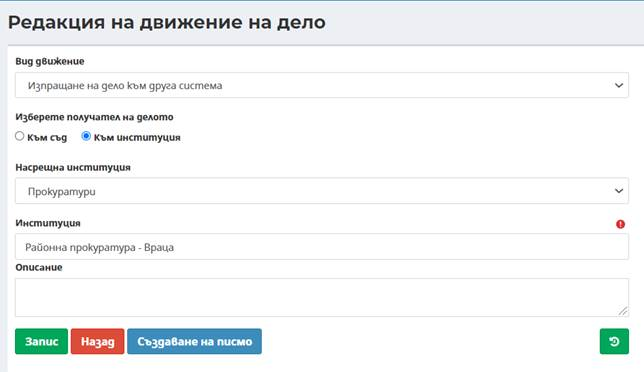
Последващите действия са идентични с по-горе описаните:
- Създаване на придружително писмо;
- Изготвяне на документ;
- Регистриране на документ.
През бутон Движение се визуализира следния екран:
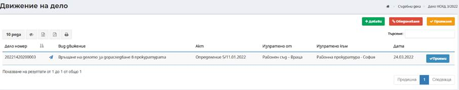
В този случай се визуализира допълнителен бутон Приеми , като неговата роля е следната:
Когато делото физически (на хартия) се върне в изпращащия съд (пример от горната снимка Районен съд Враца) именно чрез този бутон делото се приема обратно в съда.
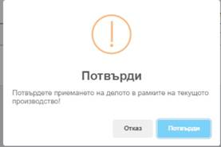
Визуализира се следния екран:
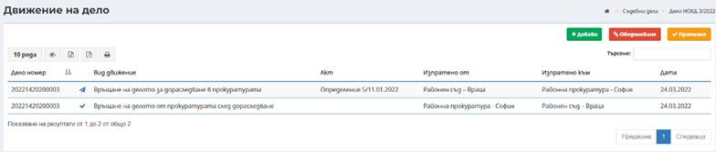
Важно: Във всички останали случаи, когато дело се изпраща към системата ЕИСС, за приемане се използва бутон Приемане .
1.1.1.1.2 Редакция на движение
Редакция на движение е възможно до
създаване приемащо движение на насрещния съд. Редакция на движение става
посредством избор на бутон Редакция
 към съответното движение в екран Движение на дело.
към съответното движение в екран Движение на дело.
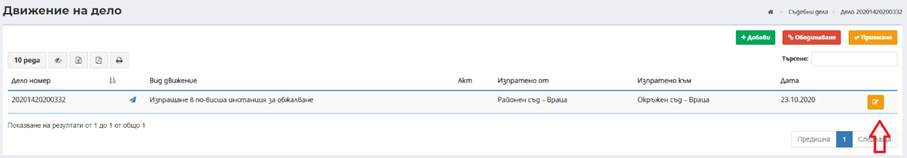
При редакция са достъпни за редакция всички полета в екран за създаване на ново движение.
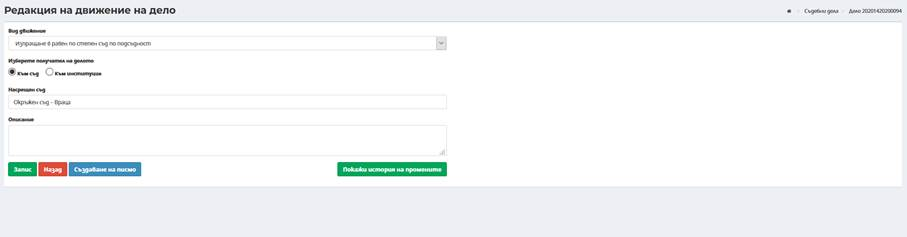
1.1.1.1.3 Приемане на движение на дела
Приемане на дела при образуване на дело в приемащия съд – при движения за Изпращане в равен по степен съд по подсъдност, Изпращане в по-висша инстанция за определяне на компетентен съд , Изпращане в по-висша инстанция при масов отвод , Изпращане в подчинен съд по компетентност , Изпращане в по-висша инстанция за обжалване
При получаване на дело в насрещен съд, при регистриране на входящия иницииращ документ за образуване на дело в приемащия съд в секция Свързано дело задължително се посочва делото на изпращащия съд. При образуване на делото в приемащия съд в екран с данни за образуване на делото се визуализира предупредително съобщение, че делата ще бъдат свързани.
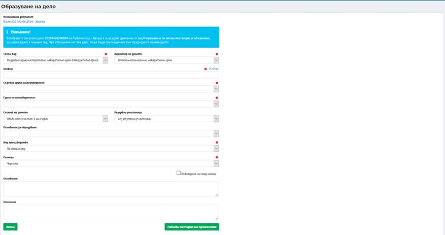
След образуване на делото в приемащия съд, приемащото движение се създава автоматично и се създава връзка между двете дела, видима в електронните им папки.
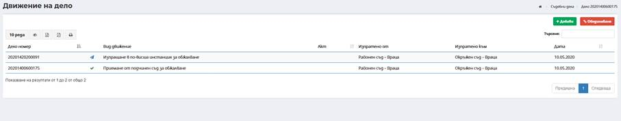
Приемане на дела при образуване на дело в приемащия съд – след движение за Връщане на делото за доразследване в прокуратурата
При получаване на дело в текущия съд след движение Връщане на делото за доразследване в прокуратурата, при регистриране на входящия иницииращ документ за образуване на дело след доразследване в текущия съд в секция Свързано дело задължително се посочва делото, което е върнато за доразследване на прокуратурата, а в поле ЕИСПП номер на НП – задължително ЕИСПП номера на върнатото за доразследване дело. При образуване на делото в текущия съд в екран с данни за образуване на делото се визуализира предупредително съобщение, че делата ще бъдат свързани.
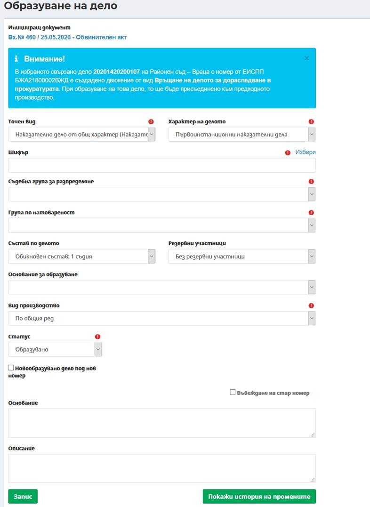
След образуване на делото в текущия съд, приемащото движение се създава автоматично и се създава връзка между двете дела, видима в електронните им папки.
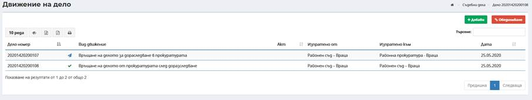
Приемане на дела изпратени за послужване в приемащия съд – след движение за Изпращане за послужване
След изпращане на делото от изпращащия съд посредством движение Изпращане за послужване, в приемащия съд трябва да се извършват действия за изтегляне на делото за послужване. За да бъда изтеглено едно дело за послужване в получаващия съд, той трябва е отбелязан като насрещен съд при създаване на изпращащото движение.
Приемане на дело за послужване в получаващия съд става посредством избор на оранжевия бутон Приемане в екран за движение на делото, във връзка с което се изпраща делото за послужване (делото, за което се изпраща за послужване).
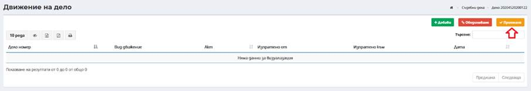
Въвеждат се необходимите данни:
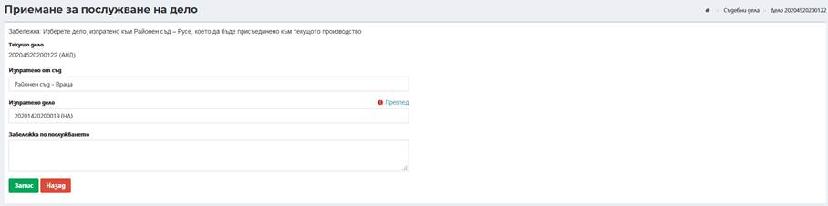
- Изпратено от съд – избира се съд, който е изпратил делото за послужване;
- Изпратено дело – избира се дело, което е изпратено за послужване. При въвеждане на минимум три последователни символа, системата автоматично търси и предлага за избор от дела, които да се приемат за послужване;
- Забележка по послужване – въвеждане на допълнителна информация. Полето не е със задължителен характер.
Забележка: Едно дело може да бъде изтеглено след изпращане за послужване само в едно дело и да бъде изтеглено само при наличие на изпращащо движение.
След въвеждане на данните се избира бутон Запис , след което движението е успешно създадено.
1.1.1.1.4 Връщане на дело
- Връщане на дела към изпращащия съд – при движения за Връщане с резултат от инстанционна проверка, Връщане в подчинен съд за администриране и Връщане след послужване
След образуване на делото в приемащия съд или след послужване и извършване на всички необходими действия в текущия съд/инстанция, се създава движение за връщане към изпращащия съд (първоизточника на делото).
За създаване на ново движение за връщане на делото се избира бутон и се зарежда екран за въвеждане на данни, в зависимост от избрания вид движение:
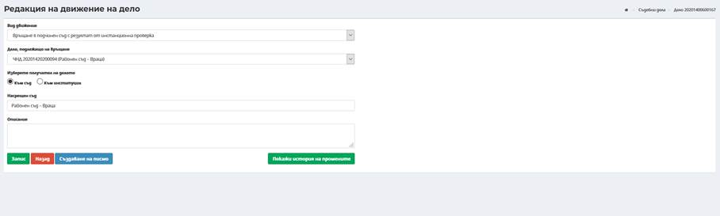
- Вид движение – избира се от номенклатура вида на движението – Връщане с резултат от инстанционна проверка, Връщане в подчинен съд за администриране и Връщане след послужване
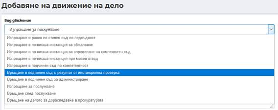
- Дело, подлежащо на връщане, в което се избира делото което подлежи на връщане (например от Окръжен съд към Районен съд след инстанционна проверка се връща делото на Районния съд)
- Получател на делото – избира се посредством маркиране на радио бутон за насочване – към съд или към институция (в зависимост от конкретното движение):
Ø При маркиране на радио бутон Към съд, посредством въвеждане на част от наименование на съд в поле Насрещен съд се избира съд получател;
Ø При маркиране на радио бутон Към институция, в поле Насрещна институция посредством избор от падащ списък се избира типа на институцията, а посредством въвеждане на част от наименование на институция от избрания тип в поле Институция се избира институция получател.
- Описание – въвеждане на допълнителна информация. Поле с незадължителен характер.
След въвеждане на данните се избира бутон Запис , след което движението е успешно създадено.
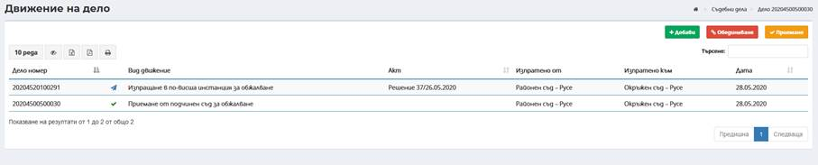
При получаване на дело в насрещния съд (изпращащия съд, на който се връща делото), при регистриране на входящия съпровождащ документ в секция Свързано дело задължително се посочва делото на текущия съд. При връщане на делото е необходимо да се приеме връщащото движение.
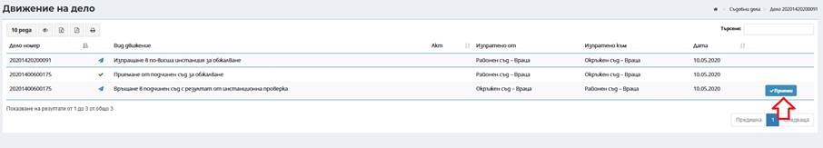
При приемане на движението системата извежда предупредително съобщение.
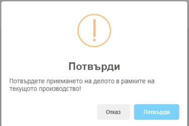
С натискането на бутон Потвърди от потребител, той изцяло приема движението. При натискане на бутон Отказ, състоянието на движението остава непроменено.
След избор на бутон Приеми се създава автоматично приемащото движение.
o Върнати дела от ЕДИС
След връщане на електронната папка
на делото от ЕДИС по изпратено движение от ЕИСС се визуализира бутон Свързано
дело 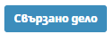
В случай че от ЕДИС се получи информация само за резултат по делото, се попълва информация в колона Описание/Резултат.
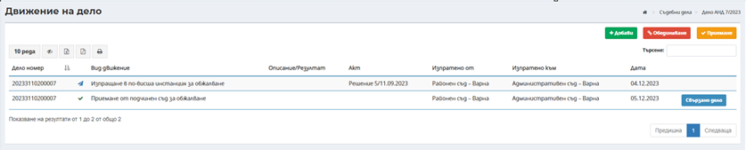
1.1.1.1.5 Обединяване на дела
Обединяването на дела се извършва чрез бутон движения от основния екран на Делото:
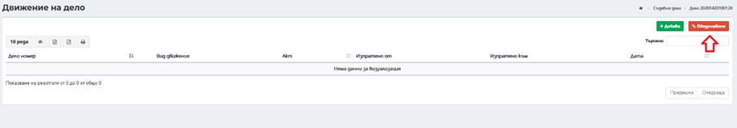
Посредством избор на бутон Обединяване се въвеждат необходимите данни:
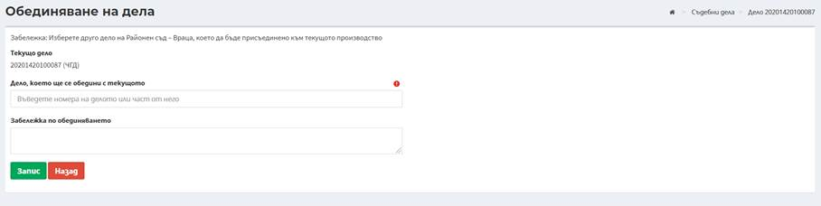
- Поле Текущо дело – извежда се текущото дело, към което ще се присъедини другото дело;
- Поле Дело, което ще се обедини с текущото – избира се дело, което да се присъедини към текущото дело;
- Поле Забележка по обединяването – въвежда се допълнителна информация при необходимост. Полето не е със задължителен характер.
След въвеждане на данните се избира бутон Запис, с което делата са успешно обединени.
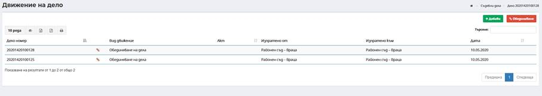